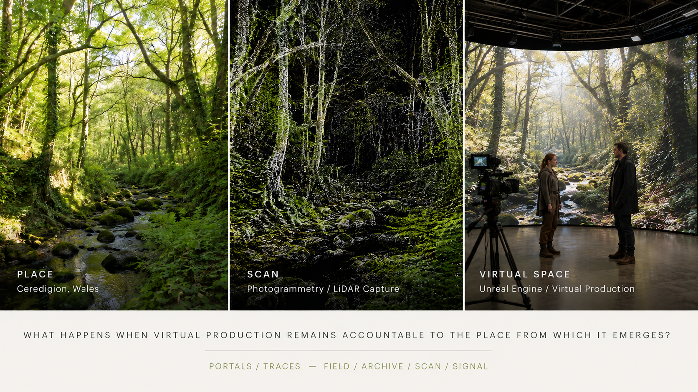

Anwadalwch [Fickleness]
A mobile film about instability, weather, movement and the difficulty of remaining wholly in one place.
Artist · Filmmaker · Researcher
Nid wy'n byw un amser nac yn unlle'n gyfan oll: Mae darn o hyd ar grwydr neu ar goll.
T. H. Parry-Williams, “Anwadalwch”
I make films and build research that asks how digital media can remain accountable to the places, languages and communities from which it emerges.
Selected Screen Works
A mobile film about instability, weather, movement and the difficulty of remaining wholly in one place.
An iPhone and LiDAR work concerned with perception, light, orientation and the unseen.
A collaborative vertical performance film moving between place, language, adaptation and embodied address.
A 360 documentary journey through identity, place, migration and memory.
![Thumbnail for Y Dosbarth Melyn [The Yellow Classroom]](https://i.ytimg.com/vi/gR3a2pCtD5k/mqdefault.jpg)
A documentary film about a Welsh-medium school and the communities formed around language and learning.
![Thumbnail for Y Gors [The Bog]](https://i.ytimg.com/vi/XRN_jdQ3gWY/mqdefault.jpg)
A portrait of the Cors Goch peatlands and the ecological, cultural and political meanings of wet ground.
A documentary work connected to the long aftermath of industrial conflict and political memory.
A documentary symphony of Helsinki’s suburbs, attentive to rhythm, everyday movement and urban edges.
![Thumbnail for Pwy Yw T.H.? [Who is T.H.?]](https://i.ytimg.com/vi/UyinTnaaqIA/mqdefault.jpg)
A video installation exploring archive, identity, absence and the cultural afterlife of T. H. Parry-Williams.
Portals / Traces
Portals/Traces is a research and practice project investigating place through photogrammetry, LiDAR, virtual production, AI image systems and live performance.

Research
Virtual production as situated, networked and pedagogical practice.
Evidence, authorship, automation, ethics and the unstable status of the image.
Welsh-language screen culture, documentary voice and linguistic visibility.
Writing / Editing / Speaking
Contact